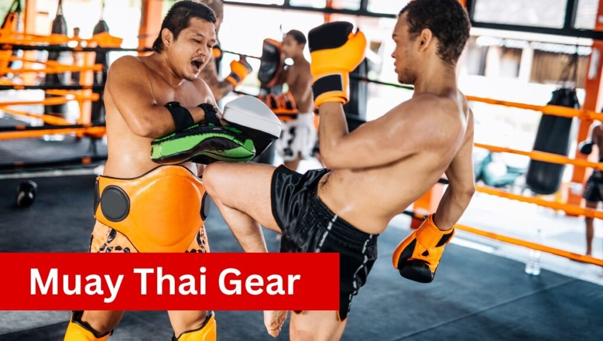
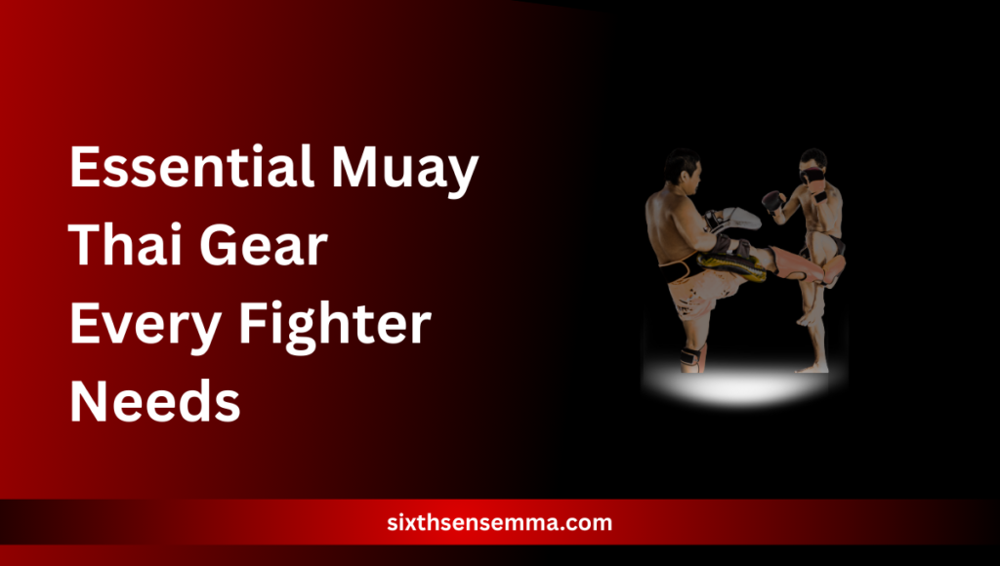

Protect Yourself Better with Muay Thai Gear

Whether you’re entering the world of Muay Thai for the first time or preparing for an intense sparring session, having the right gear isn’t optional, it’s essential. Each piece of Muay Thai gear serves a unique role in keeping you safe, enhancing your performance, and allowing you to train without the constant fear of injury. From Muay Thai gloves that shield your knuckles to groin protection that guards against accidental strikes, your gear is your first line of defense.
This detailed guide is built to walk you through every must-have item in a well-equipped fighter’s kit tailored to your skill level and training needs. Whether you’re looking for gear for sparring, certified fight gear for competition, or reliable training protection, understanding what to wear—and why—can dramatically improve your time in the gym. Make smarter choices, invest in the right equipment, and elevate your Muay Thai journey with this complete and focused Thai equipment guide.
Train with Sixth Sense MMA
At Sixth Sense MMA, our expert coaches and training programs help fighters master Muay Thai with confidence. We offer personalized gear advice and professional training sessions at our physical gym to ensure you’re equipped and skilled for every fight. Contact us today to join our community and start your journey!
Essential Muay Thai Gear Every Fighter Needs

Every fighter beginner or advanced—should build their setup around a solid training gear list. The right gear sharpens technique and builds confidence for pad work or sparring. From boxing gloves that protect your hands to Thai shorts that allow full mobility, each item plays a role in both training protection and performance.
Choosing the correct protective equipment based on your needs ensures you’re not only prepared but also training smarter. The following essentials cover every corner of safety, stability, and comfort—exactly what you need for both gear for sparring and competition.
Boxing Gloves or Heavy Bag Gloves
Muay Thai gloves are specially designed to absorb impact and support your wrist and knuckles during punches. For bag work, opt for heavy bag gloves that are slightly denser, built to take punishment without damaging your hands.
Hand Wraps for Joint Stability
Wraps are essential for fighters of all levels no session should begin without them.
Shin Guards and Knee Guards
For added joint protection, knee guards reduce stress during clinching and low kicks, especially for fighters prone to joint sensitivity.
Mouth Guard
A properly fitted mouth guard protects your teeth and jaw while absorbing shock during strikes. Custom or boil-and-bite models offer the best balance of comfort and security, helping reduce concussion risk during sparring.
Groin Protection
Groin protection is essential regardless of gender. Accidental strikes are common in Muay Thai, and a reliable cup or pelvic guard can save you from serious pain and potential injury during sparring or clinch work.
Ankle Support
Frequent pivoting and fast footwork strain your ankles. Using ankle support helps reduce fatigue, stabilizes movement, and prevents rolling or sprains—especially during long training sessions or pad drills.
Thai Shorts
Traditional thai shorts are cut for freedom of motion, allowing unrestricted kicks, knees, and footwork. They’re lightweight, breathable, and a symbol of Muay Thai culture that combines form with function.
Headgear Protection for Intense Sparring
During advanced gear for sparring sessions, headgear protection is necessary to guard against cuts, bruises, and head trauma. Choose models with good visibility and padding that doesn’t interfere with movement or balance.
Thai Pads for Drills and Striking Precision
Thai pads are vital for partner drills and power training. They help improve accuracy, conditioning, and rhythm while offering safety for both pad holder and striker. Look for well-padded, durable designs for long-term use.
Muay Thai Gloves: Your First Line of Defense
Muay Thai gloves are the cornerstone of any fighter’s gear. Crafted to shield your hands and wrists, these gloves serve a crucial purpose during both training and sparring sessions. Gloves with wrist support help stabilize your wrists and prevent hyperextension during heavy punches.
For training gear, gloves typically come in sizes ranging from 12oz to 16oz, with heavier gloves providing more protection during sparring and general training. Fight gear gloves, which range from 8oz to 10oz, are lighter and designed for speed and agility during competition.
Hand Wraps: The Unsung Heroes
Hand wraps are an essential piece of Muay Thai gear, offering much-needed protection for the hands and wrists during intense training and sparring. Hand wraps stabilize knuckles, wrists, and thumbs, reducing micro-movements to prevent sprains common in striking sports.
Here are some benefits:
- Protection and Stability: Hand wraps provide crucial support to prevent injuries to the hands and wrists. They stabilize the knuckles and thumbs, areas prone to injury during punches or clinch work.
- Prevention of Sprains: Wrapping your hands reduces micro-movements, which can lead to sprains and strains, especially in the wrist and thumb areas.
- Fit and Size: For adults, 180-inch wraps are ideal, offering enough length for secure wrapping. 120-inch wraps are recommended for smaller hands, ensuring a snug and supportive fit.
- Absorption of Sweat: Hand wraps efficiently absorb moisture, keeping it from seeping into your gloves and helping to minimize bacterial growth. This also helps extend the lifespan of your gloves.
- Essential for All Fighters: Regardless of your experience level, hand wraps are vital in every Muay Thai gear kit. They play a significant role in preventing injuries and improving performance, making them indispensable for training and sparring.
Shin Guards: Vital Protection for Muay Thai Sparring
Premium shin guards safeguard your shins and insteps during kicks, blocks, and defensive actions, making them essential for safe and effective training.
The right protective gear can effectively prevent these injuries and ensure safer training sessions.
Why the Right Fit Matters: Comfort and Protection
You’ll want shin guards that securely wrap around your shin and instep, staying in place no matter how intense the sparring session gets.
Adjustable straps are key here—they allow you to customize the fit so that it’s snug but not restrictive. Without a proper fit, your ability to move freely could be compromised, which can affect both your performance and safety.
Materials Make a Difference
When choosing Muay Thai shin guards, don’t settle for low-quality materials. High-density foam or leather provides superior protection, absorbing impact more efficiently and lasting longer. Cheap foam models may feel comfortable at first but will wear out quickly, reducing their ability to protect you during training.
Premium shin guards crafted from durable materials offer true peace of mind, keeping your legs protected from the powerful strikes faced during training and sparring.
Choosing Shin Guards for Maximum Safety
For maximum protection, look for shin guards that offer full coverage of the shin and instep. In Muay Thai, strikes to the shin are common, and even small areas left uncovered can lead to painful injuries.
Whether you’re a beginner or an advanced fighter, full coverage gear is essential for safeguarding your legs. This feature not only ensures protection from kicks but also minimizes the risk of bruising and cuts, ensuring you stay healthy for your next training session.
When to Replace Your Shin Guards
Shin guards are subjected to a lot of wear and tear over time. If your shin guards have lost their shape, the padding feels thin, or the straps are no longer functional, it’s time for a replacement.
Regular wear and tear can compromise their protective capabilities, leaving you vulnerable to injury. Replacing your shin guards regularly—depending on usage—ensures that you’re always getting the highest level of protection.
Mouthguard: Protect Your Smile
A mouthguard cushions facial impacts, protecting teeth and stabilizing the jaw (see ‘Role of Gear in Injury Prevention’ for concussion benefits).
Mouthguards provide a cushion that absorbs impacts to the face, preventing serious injuries like chipped teeth, broken jaws, or even more severe head trauma.
Boil-and-Bite Mouthguards: Ideal for Beginners
For those starting out in Muay Thai, boil-and-bite mouthguards are a great option. These affordable mouthguards mold to your teeth with a simple heat-and-bite method, ensuring a customized fit without the need for professional molding. They are comfortable, easy to use, and offer sufficient protection for newcomers in the sport.
Custom-Fitted Mouthguards for Optimal Protection
These mouthguards, designed by a dental professional, are custom-fitted to the exact shape and alignment of your teeth and gums for maximum protection.
They offer superior retention, reducing the chances of the guard shifting during high-impact movements. Custom mouthguards provide a better overall fit, improving comfort and protection during both training and sparring.
Impact of Mouthguards on Injury Prevention
According to the American Dental Association, mouthguards reduce the risk of dental injuries by over 60%. A mouthguard is a small investment that significantly enhances your safety and long-term health, reducing the chances of needing dental treatment after an intense training session or competition.
Groin Protector: Safety for All Genders
Groin protection is an essential safety item for all Muay Thai practitioners, regardless of gender. While often associated with male fighters, female Muay Thai gear also includes groin protectors specifically designed to ensure comfort and fit for women.
Proper groin protection helps reduce the risk of painful injuries during sparring or competition, ensuring you’re better prepared for close-contact exchanges and fast-paced action.
Choose Flexible Models with Adjustable Waistbands
When selecting a groin protector, it’s crucial to choose models with a flexible outer shell and an adjustable waistband. This design ensures that the protector stays securely in place without restricting movement, offering both comfort and safety during intense training or sparring. The flexibility allows for a full range of motion, so you won’t feel restricted while performing kicks or clinch work.
Check for Padding that Allows Freedom of Movement
The padding in a groin protector should offer solid protection while still allowing for unrestricted movement during intense sessions. High-quality models are designed with strategic padding that covers the essential areas while allowing for mobility. Whether you’re working on your strikes or defense, the last thing you want is a bulky protector that limits your movement or creates discomfort.
Accidental Low Blows: Common in Clinch Work and Inside Leg Kicks
Accidental low blows are not uncommon during Muay Thai, especially in clinch work and inside leg kicks. These situations increase the likelihood of a groin injury, making a high-quality protector an important part of your gear. Whether in training or competition, ensuring you have the right protection can prevent unnecessary pain and allow you to continue training effectively.
Muay Thai Shorts: Function Meets Tradition
Muay Thai shorts are more than a traditional uniform—they’re built for functionality, freedom, and fighter identity. The wide-leg cut allows for full range of motion, making it easier to throw powerful kicks, sharp knees, and dominate in clinch work without restriction.
While they reflect cultural pride, they also serve a practical role in ensuring comfort during tough training. Designed specifically for the demands of Muay Thai, these shorts blend style with purpose, helping athletes train at peak efficiency.
Allow Full Hip Rotation for Effective Strikes
The signature wide-leg cut offers unmatched mobility, letting fighters throw high kicks, elbows, and clinch movements without restriction. This design supports fluid motion, critical in Muay Thai’s striking style.
Symbolize Fighter Pride and Gym Identity
Most Muay Thai shorts feature the fighter’s gym name, Thai script, or symbolic artwork. These details carry deep meaning, showing pride, lineage, and a connection to Muay Thai roots.
Moisture-Wicking Options for Humid Gyms
In intense training sessions—especially in hot, humid conditions—moisture-wicking fabric keeps fighters dry and comfortable. This reduces distractions and skin irritation during prolonged workouts.
Opt for Breathable Materials in Hot Conditions
Choosing lightweight and breathable materials is key in tropical climates. These shorts help maintain a cool body temperature and prevent fatigue from heat buildup, allowing for longer, more efficient training.
Training vs. Competition Gear: What’s the Difference?
Each serves a distinct purpose. Training gear is designed for long hours of practice, offering maximum comfort and injury prevention. It’s more forgiving, built with extra padding to protect both you and your partner during drills or sparring. In contrast, competition gear prioritizes speed, precision, and regulatory compliance.
Lighter materials, snug fits, and minimal cushioning allow for swift movements and accurate strikes. Fighters need to choose wisely—what works in practice might not pass for an official match. Also, always verify competition rules, especially regarding protective equipment like headgear, which may be mandatory in amateur fights.
| Type | Primary Focus | Key Features |
|---|---|---|
| Training Gear | Comfort & Safety | Extra padding, long hand wraps, 14–16oz gloves |
| Competition Gear | Regulation & Speed | Lightweight gloves, tighter fit, less cushioning |
Choosing the Right Gear Based on Your Level
Selecting the correct Muay Thai gear depends heavily on your skill level and training goals. Beginners should look for equipment that offers maximum protection, ease of use, and adjustability to build confidence and reduce the risk of early injuries. In contrast, experienced practitioners often prefer gear that supports greater mobility, lighter weight, and precision fit to enhance speed and performance.
As you progress, switching to more performance-oriented gear can improve training outcomes. For those just starting out, it’s wise to consult your coach or gym before purchasing to ensure your gear aligns with your development stage.
Material Matters
The material used in Muay Thai gear significantly impacts its longevity, performance, and comfort during training. High-quality materials not only offer better protection but also ensure your equipment can endure the rigors of daily use. Whether you’re training casually or at a competitive level, choosing the right material determines how often you’ll need to replace your gear and how effective it will be during intense sessions.
Synthetic Leather
Synthetic leather is a cost-effective option, ideal for beginners or casual use. While it’s easier on the wallet, it tends to wear out faster, especially with regular training. This material lacks the flexibility and resilience of natural leather, making it a short-term solution.
Genuine Leather
Over time, it molds to the shape of your hands or shins, offering a better fit and enhanced protection. It’s the preferred choice for fighters who train regularly or at advanced levels.
High-End Craftsmanship
Premium Muay Thai gear is often reinforced with triple stitching for added strength and includes dense foam layers that absorb impact efficiently. This kind of construction ensures the gear lasts longer and offers consistent protection, even under heavy use.
The Importance of Fit and Comfort in Your Gear
Properly fitting gear ensures safety and performance, preventing shifts during drills that could cause distraction or injury. Your gear should feel like an extension of your body—secure, breathable, and flexible enough to allow unrestricted movement. Prioritizing fit not only enhances performance but also builds confidence during intense sessions.
Points
- Gloves should feel snug with wraps on, offering both grip and wrist stability.
- Shin guards must fully protect from just below the knee down to the instep.
- Hand wraps need to feel firm yet comfortable—tight enough to support, but not restrict blood flow.
- Always consult brand-specific size guides to ensure your gear matches your body type.
Brand Showdown: Popular Muay Thai Gear Brands Reviewed
Choosing from top Muay Thai brands can be confusing, especially with so many options offering unique strengths. Whether you’re a beginner or seasoned fighter, knowing what each brand specializes in can help you invest wisely.
These Thai boxing gear brands dominate in both Thailand and global markets, making them trusted names among athletes worldwide.
| Brand | Known For | Best For |
|---|---|---|
| Fairtex | Premium leather, craftsmanship | Intermediate–Pro |
| Twins | Reliable padding, durability | All levels |
| Yokkao | Fashion-forward + functional | Style-conscious |
| Top King | Larger fit, great for clinch | Bigger athletes |
Hygiene and Gear Maintenance
Maintaining your Muay Thai gear is just as vital as choosing the right equipment. Neglecting hygiene can lead to fungal infections, bacterial buildup, and persistent odors that not only affect your performance but also your health.
Clean gear ensures longevity, keeps your training environment sanitary, and protects you from preventable skin issues. A few consistent habits can preserve the quality of your equipment and save you money in the long run.
Important Practices:
- Air out gloves immediately after each session using deodorizers or glove dogs.
- Wash hand wraps after every use to prevent sweat buildup and odor.
- Wipe down shin guards and headgear with disinfectant spray.
- Never store damp gear in closed gym bags — always dry them properly.
Budget vs. Premium: Should You Invest More in Gear?
When deciding between budget and premium Muay Thai gear, it’s essential to weigh both cost and quality. While budget gear can be suitable for beginners or those engaging in casual training, it often compromises on materials and durability. Premium gear, on the other hand, offers better protection, especially in areas like the head and joints, where higher-quality foam and stitching make a significant difference.
While you may need to replace cheaper gear more frequently, investing in premium equipment ensures longevity and enhanced performance, particularly for sparring or intense training.
Accessories You Didn’t Know You Needed
Your gym bag essentials should include more than just the basics like gloves and shorts. Consider adding ankle support to help prevent injuries during pivots, as well as Thai pads for partner drills to enhance your training sessions.
Don’t forget items like disinfectant spray, a towel, and extra wraps to keep your gear fresh and hygienic. These small upgrades can improve your training flow and ensure you’re always prepared for any session.
What NOT to Wear: Common Gear Mistakes
When it comes to Muay Thai gear, avoid common mistakes that could lead to injuries. Never use bag gloves for sparring, wear loose headgear, or skip hand wraps. Also, be cautious of overused or torn shin guards, as improper use of protective gear increases the risk of injury.
Common Gear Mistakes to Avoid
| Mistake | Impact on Training |
|---|---|
| Using bag gloves for sparring | Insufficient protection for intense sparring |
| Wearing loose headgear | Inadequate protection, leading to injuries |
| Skipping hand wraps | Increased risk of wrist and hand injuries |
| Overused or torn shin guards | Reduced protection, heightening injury risk |
The Role of Gear in Injury Prevention
Training gear plays a crucial role in injury prevention, with studies showing that protective equipment can reduce injury rates by nearly 40% in striking sports. 4.1-mini Always ensure your gear is suited to the intensity of your sparring to maximize safety.
Women’s Muay Thai Gear: Tailored Fit and Protection
Women’s Muay Thai gear is specifically designed with a tailored fit to provide better comfort and protection. Look for gender-specific gear like smaller gloves with adjustable straps and designs that ensure better waist and chest coverage, improving both comfort and performance for female athletes at all levels.
Why Fighters Choose Sixth Sense MMA
Looking to level up your Muay Thai game with people who actually care about your progress? At Sixth Sense MMA, we’re more than just a gym — we’re a team that trains hard, lifts each other up, and fights smarter every day.
- Trainers Who’ve Been There
Our coaches have fought in the ring and know what works. They’ll guide you with practical, one-on-one tips that actually make a difference, whether you’re just starting out or already competing. - Sessions That Work for You
Whether you’ve got a packed schedule or you’re chasing fight-night glory, our flexible classes are built to fit around your life and goals. - No-Nonsense Gear Advice
Not sure what gloves or wraps to get? We’ll walk you through it, just like we do for our fighters — no upselling, just real talk. - Train with a Tribe
You won’t find any ego here. Just a tight crew of fighters who push each other, laugh between rounds, and show up for every rep. - Schedule That Doesn’t Suck
Morning, evening, weekends — we’ve got training slots that work even when life gets busy.
Ready to jump in? Shoot us a message and we’ll get you set up with your first session.
Conclusion
Training smart in Muay Thai isn’t only about skills—it’s about wearing the right muay thai gear. Whether you’re hitting pads, sparring a partner, or preparing for a fight, the right gear for training keeps you safer, more confident, and consistent. Investing in quality training gear, choosing the right thai gear brands, and following proper gear maintenance ensures you get the most out of every session. Stay prepared, stay safe, and always respect your gear as much as your technique.
FAQ’s
To begin Muay Thai, you’ll need boxing gloves, hand wraps, shin guards, mouthguard, and comfortable training shorts. These protect you during drills and pad work while allowing for full movement and performance.
Muay Thai gloves have more flexible wrist support and padding distribution, allowing for clinching, catching kicks, and elbow work—features not needed in traditional boxing gloves.
Glove size depends on your body weight and purpose. Beginners usually start with 14oz or 16oz gloves for training and sparring, while lighter 10oz–12oz gloves are used for pad or bag work.
Yes—especially for beginners and sparring sessions. Shin guards protect both you and your training partners during drills and reduce the risk of injuries when blocking or delivering kicks.
Hand wraps should be washed after every session and replaced if they lose elasticity. Gloves typically last 6–18 months depending on training frequency and maintenance. Replace them if padding wears out or odor persists despite cleaning.
Not always. Training gear tends to be heavier and more padded for protection. Competition gear is lighter and meets strict regulations. Always check with your coach or event rules.
Wipe down gloves and shin guards after each session. Let gear dry fully—preferably in a ventilated area. Wash hand wraps after every use. Avoid leaving gear in closed gym bags overnight.
Yes. Accidental contact happens often, and a mouthguard can prevent chipped teeth, cuts, and jaw injuries. Custom-fit or boil-and-bite options offer solid protection.
Train with us in Coppell
The first class is free. Shorts, a t-shirt and a water bottle. We lend the rest.
Book a free class